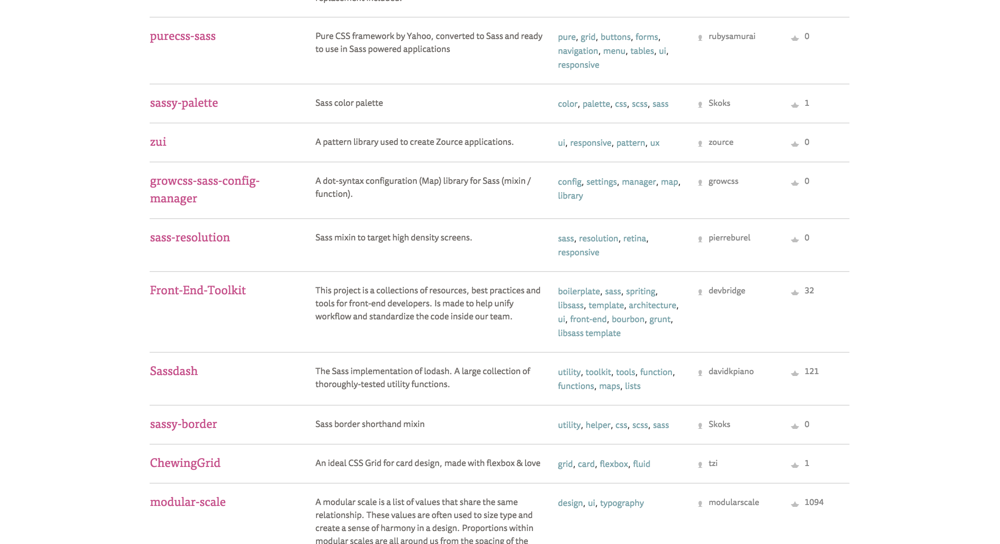

This is a talk about polyfills.
This is a talk about polyfills optimism.
context.

I'd work that way.
my organization isn't ready.
what can I do?
"What I need isn't supported yet."
+ *
"Same."
–Every polyfill ever written.
practical examples
(aka story time)
case 1: framework envy
I'd be able to use *.
it doesn't fit the designs.
make a system that does.
*Modular scale, vertical rhythm,
color scheme tools –
any design-related Sass framework or system

Sache.in
Patterns.
Designers!
| What I wanted |
What I got |
|

|
|
case 2: it only looks easy
I'd keep my CSS short and simple,
non-tech people keep adding complexity.
?
 xkcd.com
xkcd.com
case 2: it only looks easy
I'd keep my CSS short and simple,
non-tech people keep adding complexity.
?
educate
case 3: moving targets
my project would run smoothly,
the details keep changing.
?
take good notes.
my project would run smoothly,
the details keep changing.
take good notes.
// write things down
This is a talk about polyfills and optimism.
*